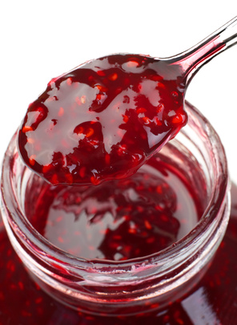

Accueil - Le Jardin Mobile
 Circulaires Infolettre Produits Succursales Emplois Traiteur Recettes Sélectionner une page
Préparation de commande
Évitez l’attente!
En savoir plusCirculaire
Les rabais de la semaine
Consulter la circulaireÀ télécharger
Planificateur
de repas
Consulter Nouveau produit
Poudre de beurre d’arachide
En savoir plusNouveau produit
Evive Smoothie
En savoir plus
CIRCULAIRES
Nos succursales
Heures d’ouvertures
Infolettre
Contactez-nous
NOTRE ÉQUIPE
Alexandre Monette
Directeur général
Tél: 450 655-3821 poste 20006
alexandre.monette@groupeepicia.com
François Lambert
Coordonnateur – approvisionnement
et mise en marché Fruits et légumes
Tél: 450 655-3821 poste 20003
francois.lambert@groupeepicia.com
Gilles Jr. Bédard
Directeur mise-en-marché et Gérant de catégories
Tél: 450 655-3821 poste 20008
gilles.bedard@groupeepicia.com
Joanie Gaudette
Gérante de catégories
Tél: 450 655-3821 poste 20041
joanie.gaudette@groupeepicia.com
Sylvie Senécal
Directrice ressources humaines
Tél: 450 655-3821 poste 20005
sylvie .senecal@epicia.ca